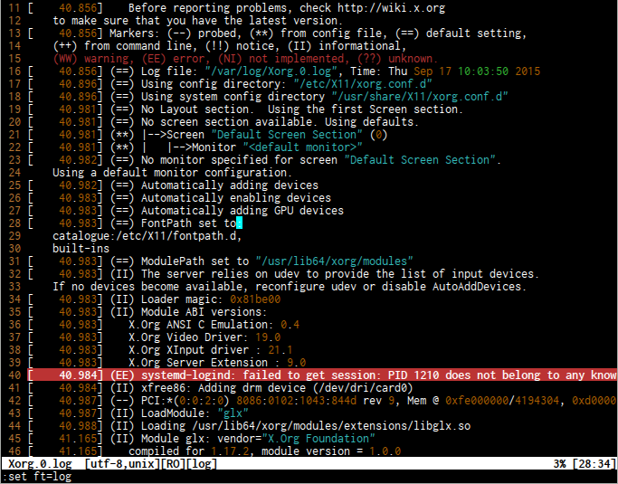

Description
Vim syntax file to highlight various log files.
This syntax file describes how to highlight:
- Error messages (containing 'error', 'fail', etc. words)
- Warning messages (containing 'warning', 'delete', etc. words )
- Strings ( Double quotes and single quotes )
- Date values in various formats
- Time values in various formats
- Numbers - decimal and hex
Check it out:
This syntax is based on messages.vim - syntax file for highlighting Linux kernel messages, but it's not bound to positioning of elements (messages.vim requires your logs to start with Date and time values or it will not highlight anything).
Install
Copy or symlink this file to your $VIMRUNTIME/syntax directory or to ~/.vim/syntax directory